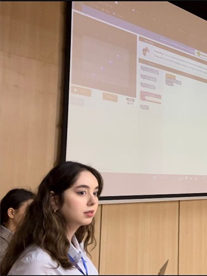
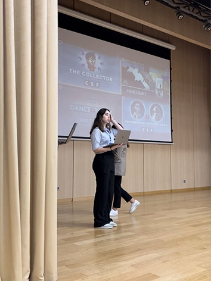
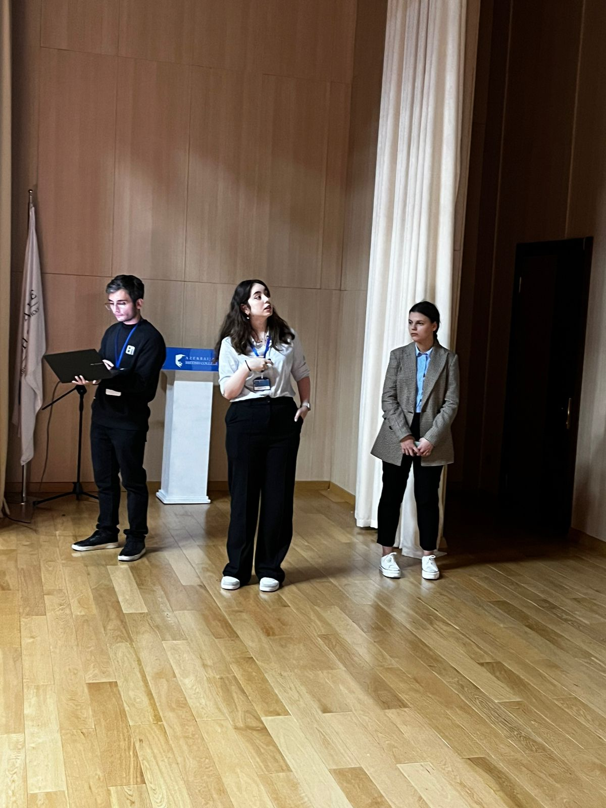
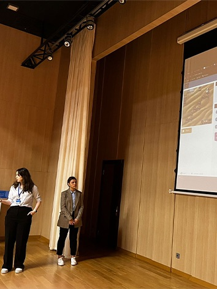
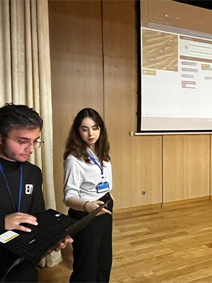
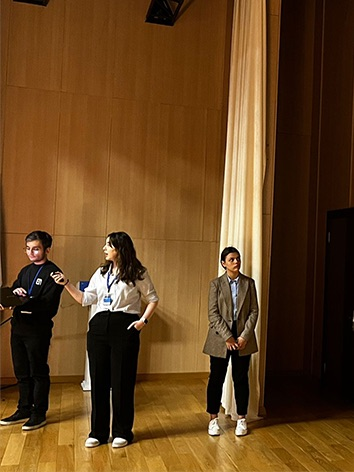
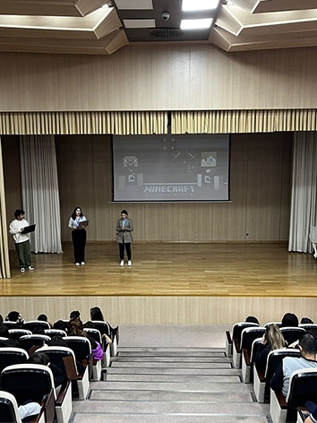

Code.org is a non-profit organization that aims to make computer science education more accessible to students around the world. It was founded in 2013 by brothers Hadi and Ali Partovi. The organization provides a variety of free online resources, tutorials, and courses to help individuals, especially students, learn and engage with computer programming and coding. Code.org's mission is to promote computer science education in schools and to increase participation in the field, especially among underrepresented groups such as women and minorities. The organization offers a curriculum that is designed to be beginner-friendly and suitable for students of all ages. It includes both online and unplugged (offline) activities to introduce programming concepts. One of Code.org's notable initiatives is the "Hour of Code," an annual event that takes place during Computer Science Education Week, where millions of people worldwide participate in coding activities for at least one hour. Code.org also collaborates with schools, teachers, and other organizations to advocate for the inclusion of computer science in the standard curriculum. Overall, Code.org plays a significant role in advancing computer science education and fostering interest in coding and technology among students globally.
Our team consists of 4 brilliant SITE students: Albina Yermakova, Alisa Nasirli, Alihasan Hasanov, and Kanan Manafov. We, as a whole team, came together after finishing our required courses at codecademy.com to create a great website that introduces us, our Hour Of Code event, and our experience of creating this website. By clicking on hour names mentioned above, you can get access to our individual codecademy pages and review our progress. You can also get access to more information about us by clicking About Us here or at the bottom of the page. We all hope that our website can provide you with all the information you require to see and we hope to impress you!
Our engagement with the Hour of Code event was an enriching experience where our team had the privilege of instructing approximately 130 enthusiastic grade 6-7 students. This initiative, designed to introduce young minds to the world of coding and computer science, proved to be both educational and entertaining. Witnessing the students' curiosity and passion for learning was truly inspiring. The interactive sessions fostered a dynamic environment, allowing the students to grasp fundamental coding concepts with ease. As facilitators, we found great joy in guiding these budding technologists through engaging activities that not only demystified coding but also sparked a genuine interest in the vast possibilities of technology. The Hour of Code event not only underscored the importance of computer science education but also highlighted the sheer joy and excitement that can be derived from the world of coding, making it a memorable and impactful experience for both students and instructors alike.
Throughout the collaborative journey of developing our website using HTML, CSS, and JavaScript, our team of four encountered a range of challenges that tested our problem-solving and coding skills. From aligning design elements to ensuring cross-browser compatibility, each step presented its unique hurdles. The intricacies of JavaScript functionality added another layer of complexity, requiring meticulous debugging and coordination among team members. Fortunately, the invaluable resources provided by codecademy.com emerged as a key ally in overcoming these challenges. The platform's interactive courses not only equipped us with in-depth knowledge of web development but also introduced us to best practices and efficient coding techniques. The hands-on approach of Codecademy significantly contributed to our learning process, empowering us to implement more effective and elegant solutions in our website development endeavors.
Immerse yourself in captivating visuals and compelling stories with our rich and dynamic media showcase displaying our experience throughout the Hour of Code event.
      